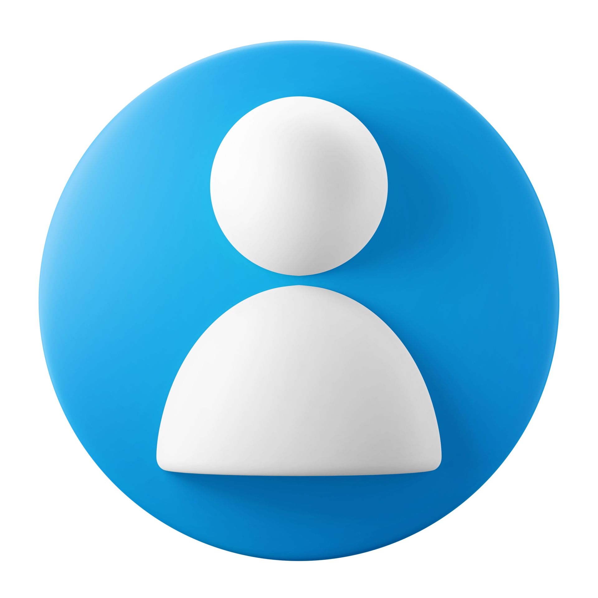

AI Chatbot
Tools Used: Python, NLP, Flask, Dialogflow
Project Summary
This AI Chatbot project was developed to provide intelligent, real-time responses to user queries using AI. It understands natural language input and responds in a meaningful, user-friendly way. Python handles core programming, NLP processes user messages, Flask manages backend operations, and Dialogflow manages conversational flow.
Team Members

Name: Gnanaprakash G
Role: Lead AI Developer & Data Analyst
Position: Team Leader
Contact: +91 73970 01317

Name: Alice
Role: NLP & Flask Developer
Position: Team Member
Contact: +91 12345 67890
Name: Bob
Role: Dialogflow Integration
Position: Team Member
Contact: +91 12345 67890
Project Aim
The aim of this AI Chatbot project was to develop an intelligent system capable of understanding natural language queries from users and providing accurate, real-time responses. The chatbot is designed to assist users efficiently, reducing the need for manual intervention. By using Python, NLP, Flask, and Dialogflow, the project demonstrates practical AI applications in improving user communication.
Step-by-Step Workflow
- Requirement Analysis: Defined project scope, features, and goals to ensure clarity for the team.
- Dataset Preparation: Alice collected and preprocessed data, creating intents and cleaning text for model training.
- NLP & Model Training: Alice trained the chatbot model, handling text preprocessing, intent classification, and validation.
- Dialogflow Integration: Bob configured the Dialogflow agent, imported intents, and set up responses and fallback scenarios.
- Backend Setup: Alice implemented Flask APIs to serve the chatbot and connect it to the frontend.
- Frontend Development: Collaborated with Alice to design responsive UI, slider, and fullscreen image viewer.
- Testing: Team tested chatbot accuracy, conversation flow, edge cases, and performance.
- Deployment: Deployed the chatbot online with mobile responsiveness and SSL enabled.
- Documentation: Prepared full documentation including summary, screenshots, workflow, and team roles for portfolio.
Final Conclusion
This AI Chatbot project successfully integrates machine learning, NLP, and web technologies to create a responsive and user-friendly conversational agent. It improves the efficiency of information retrieval, provides practical AI experience, and serves as a functional prototype for real-world applications such as customer support or educational platforms, demonstrating AI’s potential to automate and enhance human-computer interaction.